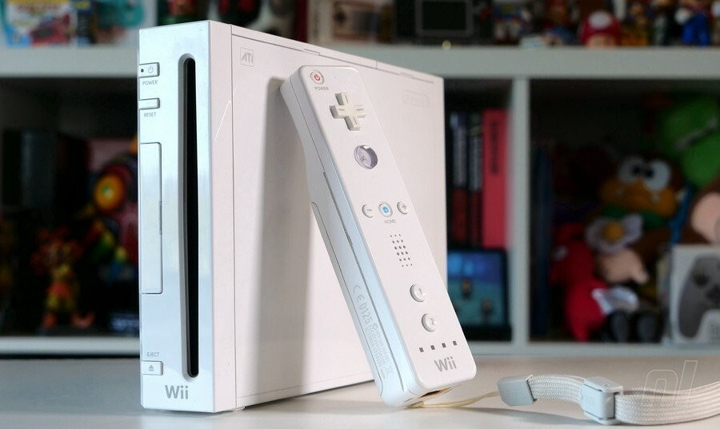
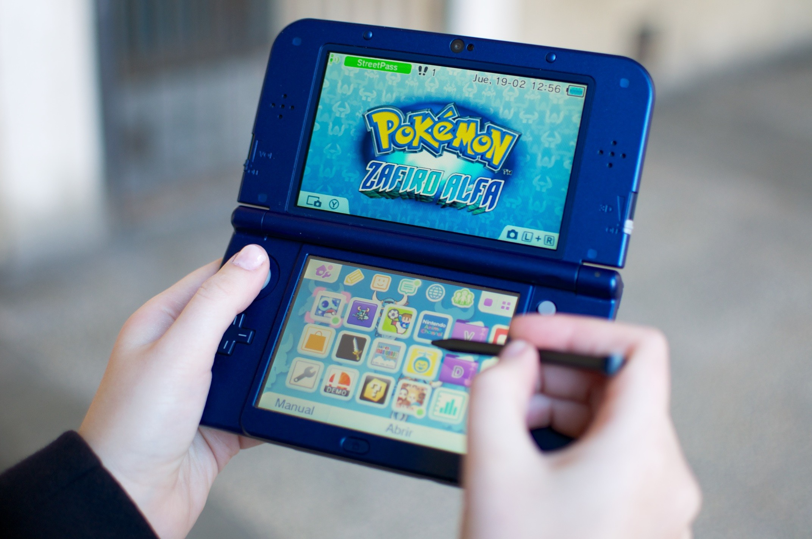
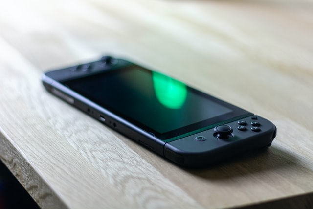

Consola de sobremesa
Nintendo Wii
Innovadora consola con un mando inalámbrico, el cual puede usarse como un dispositivo de mano con el que se puede apuntar, además de poder detectar movimientos en un plano tridimensional.

Consola portátil
Nintendo 3DS
Consola diseñada para poder mostrar gráficos en 3D sin necesidad de gafas especiales, gracias a la autoestereoscopia. Es retrocompatible con la Nintendo DS y con el software de DSiWare.

Consola híbrida
Nintendo Switch
Con una pantalla integrada, es una consola que puede ser usada como portátil o como de sobremesa. La primera de su clase en todo el mundo.